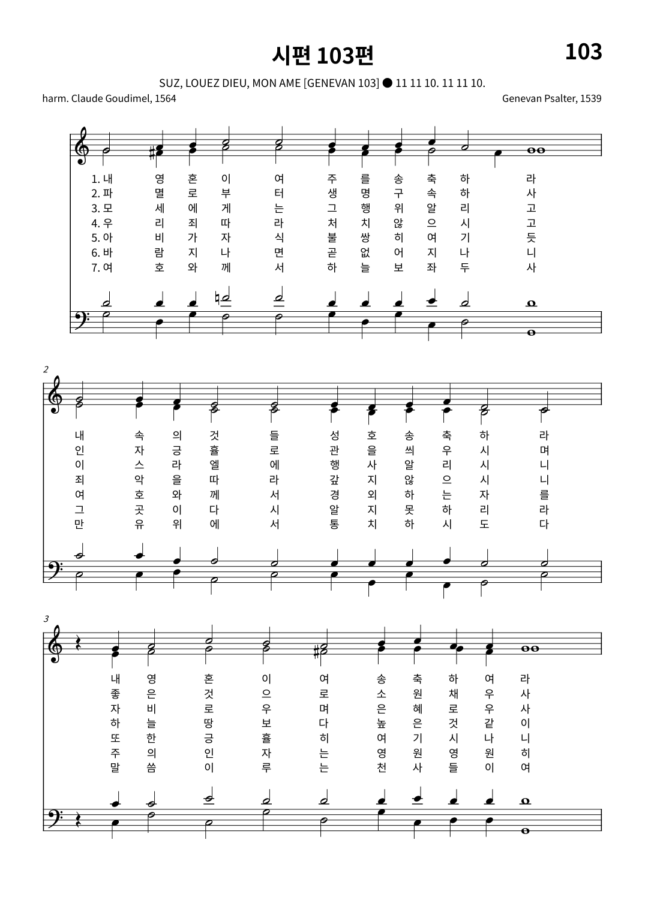

시편 103편
SUZ, LOUEZ DIEU, MON AME [GENEVAN 103] · 11 11 10. 11 11 10.
곡조: Genevan Psalter, 1539 · 화성: Claude Goudimel, 1564 · 가사: 개역한글판 시편 103편 편역(AI 초벌 편역판 · 신학 감수 전) · 7절
악보 PDF MusicXML(출력용) MusicXML(반주용, 전주·반복 포함) 개역한글 시편 103편 읽기

가사
1절
내 영혼이여 주를 송축하라
내 속의 것들 성호 송축하라
내 영혼이여 송축하여라
그 모든 은택 잊지 말지어다
저가 네 죄악 모두 사하시며
네 모든 병을 고치시도다
내 영혼이여 주를 송축하라
내 속의 것들 성호 송축하라
내 영혼이여 송축하여라
그 모든 은택 잊지 말지어다
저가 네 죄악 모두 사하시며
네 모든 병을 고치시도다
2절
파멸로부터 생명 구속하사
인자 긍휼로 관을 씌우시며
좋은 것으로 소원 채우사
독수리 같이 새롭게 하시니
여호와께서 의를 행하시고
눌린 자 모두 건지시도다
파멸로부터 생명 구속하사
인자 긍휼로 관을 씌우시며
좋은 것으로 소원 채우사
독수리 같이 새롭게 하시니
여호와께서 의를 행하시고
눌린 자 모두 건지시도다
3절
모세에게는 그 행위 알리고
이스라엘에 행사 알리시니
자비로우며 은혜로우사
더디 노하며 인자 풍부하사
항상 경책지 아니하시오며
노를 영원히 안 품으시리
모세에게는 그 행위 알리고
이스라엘에 행사 알리시니
자비로우며 은혜로우사
더디 노하며 인자 풍부하사
항상 경책지 아니하시오며
노를 영원히 안 품으시리
4절
우리 죄 따라 처치 않으시고
죄악을 따라 갚지 않으시니
하늘 땅보다 높은 것 같이
경외하는 자 그 인자 크도다
동이 서에서 멀리 있음 같이
우리 죄과를 옮기셨도다
우리 죄 따라 처치 않으시고
죄악을 따라 갚지 않으시니
하늘 땅보다 높은 것 같이
경외하는 자 그 인자 크도다
동이 서에서 멀리 있음 같이
우리 죄과를 옮기셨도다
5절
아비가 자식 불쌍히 여기듯
여호와께서 경외하는 자를
또한 긍휼히 여기시나니
이는 우리의 체질을 아시며
진토인 것을 기억하심이라
인생은 풀과 들꽃 같도다
아비가 자식 불쌍히 여기듯
여호와께서 경외하는 자를
또한 긍휼히 여기시나니
이는 우리의 체질을 아시며
진토인 것을 기억하심이라
인생은 풀과 들꽃 같도다
6절
바람 지나면 곧 없어지나니
그곳이 다시 알지 못하리라
주의 인자는 영원 영원히
경외자에게 있으며 그 의는
그 자손들의 자손에 미치리
언약 지키는 자에게로다
바람 지나면 곧 없어지나니
그곳이 다시 알지 못하리라
주의 인자는 영원 영원히
경외자에게 있으며 그 의는
그 자손들의 자손에 미치리
언약 지키는 자에게로다
7절
여호와께서 하늘 보좌 두사
만유 위에서 통치하시도다
말씀 이루는 천사들이여
여호와 주를 송축할지어다
천군 만물아 주를 송축하라
내 영혼이여 송축하여라
여호와께서 하늘 보좌 두사
만유 위에서 통치하시도다
말씀 이루는 천사들이여
여호와 주를 송축할지어다
천군 만물아 주를 송축하라
내 영혼이여 송축하여라